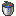
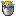
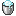

#kaleidoscope_cookery:bucket_container
物品标签 · 10 个已收录成员
标签成员 (10)
 水桶
水桶minecraft:water_bucket
 熔岩桶
熔岩桶minecraft:lava_bucket
 奶桶
奶桶minecraft:milk_bucket

鲑鱼桶minecraft:salmon_bucket鳕鱼桶
minecraft:cod_bucket热带鱼桶
minecraft:tropical_fish_bucket

河豚桶minecraft:pufferfish_bucket美西螈桶
minecraft:axolotl_bucket蝌蚪桶
minecraft:tadpole_bucket

细雪桶minecraft:powder_snow_bucket
使用该标签的配方
无